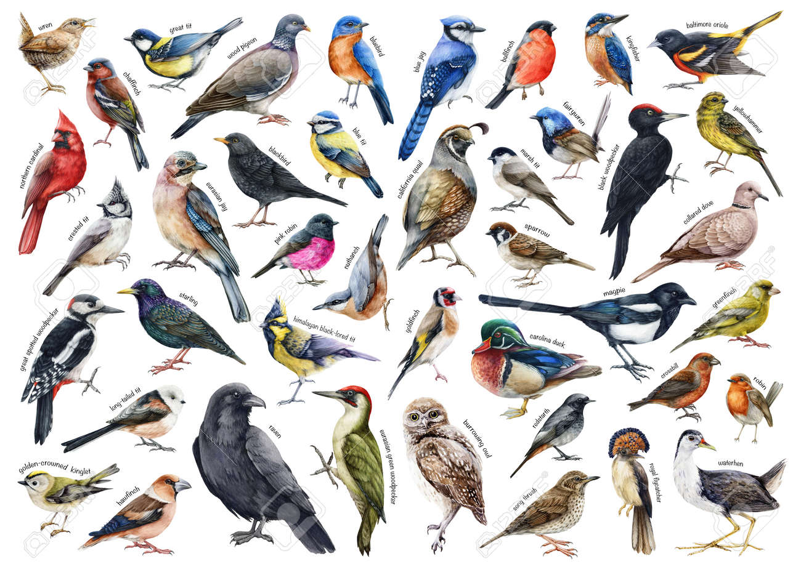

Aves.
Por: Matheus Gabriel.
Boas-vindas ao meu primeiro blog! aqui falarei sobre alguns tipos de aves e como são seu extinto na natureza.
Vou compartilhar conhecimentos sobre o quão perfeito é uma ave.
Por: Matheus Gabriel.
Boas-vindas ao meu primeiro blog! aqui falarei sobre alguns tipos de aves e como são seu extinto na natureza.
Por: Matheus Gabriel.
As aves são animais vertebrados e endotérmicos (mantêm o corpo quente por dentro), famosos por terem o corpo coberto por penas e ossos leves. Elas descenderam de dinossauros, botam ovos com casca dura e possuem bico sem dentes.
Fonte: Jornal Opção
Por: Matheus Gabriel
O Archaeopteryx é considerado historicamente a primeira ave do mundo. Ele viveu há cerca de 150 milhões de anos, no período Jurássico, na região onde hoje é a Alemanha. Esse animal de transição tinha asas e penas como uma ave, mas também dentes e cauda óssea como um dinossauro.
Fonte: TecMundo

Por:Matheus Gabriel.
cerca de 50 mil milhões de aves selvagens no mundo, além de um número total estimado entre 50 e 430 mil milhões de indivíduos.
Fonte: TechTudo

Por: Matheus Gabriel.
A formação de um ovo de pássaro leva em média 25 horas e acontece dentro do corpo da fêmea, passando por etapas no ovário e no oviduto.
Fonte: Educa Mais Brasil

Por: Matheus Gabriel.
Sabiá-laranjeira: É o símbolo da avifauna brasileira. Seu canto é forte, melodioso e muito romântico.Uirapuru-verdadeiro: Conhecido como o "músico da floresta". Ele canta por pouco tempo na Amazônia, mas seu som parece uma flauta mágica.Curió: Tem um som curto, rítmico e muito limpo. É muito admirado em torneios de canto no país.
Fonte: BBC

Por: Matheus Gabriel.
A vida das aves é uma jornada fascinante que desafia a nossa percepção do tempo. Diferente do que muitos imaginam, os pássaros não vivem apenas alguns dias ou meses; eles medem suas existências em anos e, em alguns casos, em longas décadas, superando até mesmo a expectativa de vida de muitos mamíferos.
A longevidade desses animais é uma obra-prima da evolução e varia drasticamente conforme o tamanho da espécie, o seu habitat e a sua rotina biológica.
E aí, qual ave vc mais gosta?